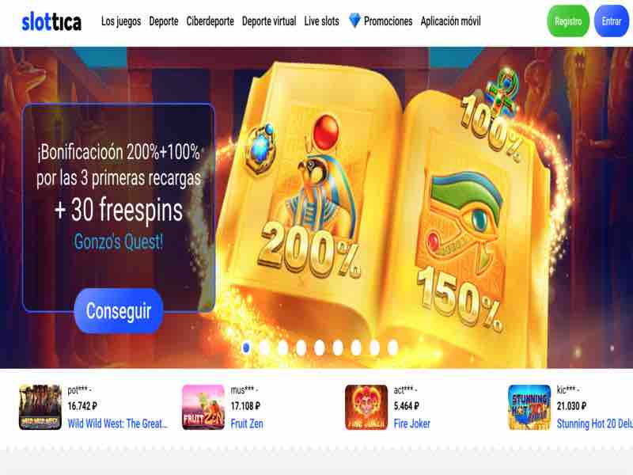
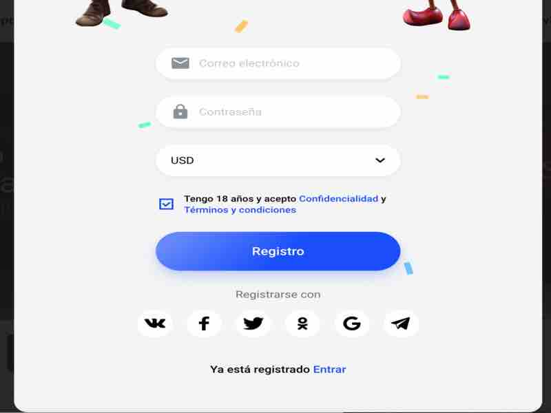
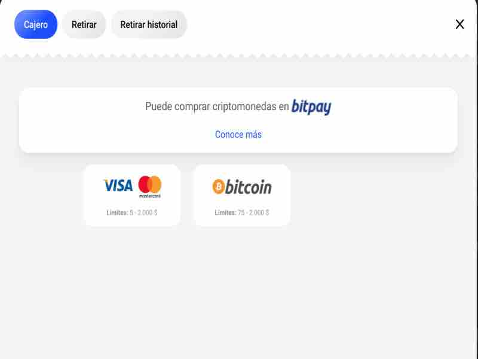

Jogue Aviator Spribe Slottica online
Jogue Aviator Slottica
Para jogar Aviator no cassino online Slottica, você precisa se registrar no site oficial do provedor do jogo - o cassino Slottica.
O registro no Slottica lhe dará a oportunidade de jogar Aviator por dinheiro real, bem como entrar em contato com o suporte, sacar ganhos e desfrutar de outros benefícios de um usuário registrado.
Registro no casino online Slottica para jogar Aviator
O registo de um novo utilizador é obrigatório de acordo com as regras de qualquer casino na Internet para identificação pessoal em caso de pagamento de ganhos. Este procedimento simples leva de 2 a 3 minutos e sua conclusão não é mais difícil do que registrar um e-mail. Contamos em detalhes como se registrar na Slottica para jogar Aviator.
Métodos de inscrição no casino online Slottica
Insira seu endereço de e-mail, senha e moeda de sua conta de jogo. Certifique-se de inserir o endereço de e-mail correto ao qual você tem acesso permanente. A senha deve ter pelo menos 6 caracteres. A escolha da moeda da conta também é importante, pois é nessa moeda que o dinheiro será creditado na conta e os ganhos serão realizados. O Slottica Casino oferece atualmente mais de 20 moedas à sua escolha.
Após o cadastro por e-mail, aconselhamos a vincular uma rede social à sua conta pessoal clicando no ícone da rede social. Isso permitirá que você insira sua conta pessoal na próxima vez, clicando no ícone da rede social, o que economizará tempo. No entanto, isso só funciona se a rede social e a conta Slottica estiverem registradas no mesmo e-mail.
Se você possui uma conta nas redes sociais, escolha a forma de cadastro nas redes sociais.
Estão disponíveis as seguintes redes sociais: Vkontakte, Facebook, Twitter, Odnoklassniki, assim como Telegram messenger e conta gmail. Ao clicar no ícone da rede social desejada, você chegará à página da mesma rede social onde deverá inserir seu nome de usuário e senha. Não se preocupe com vazamentos de senha - o cassino não recebe sua senha. Essas informações permanecem com a rede social, que quer ter certeza de que é realmente você, e não outra pessoa faz login na rede social.
Após o registro bem-sucedido, você verá uma oferta personalizada para novos jogadores. Por exemplo, a Slottica oferece um bônus de boas-vindas de 200% para depósitos acima de US $ 20.
Reabastecimento da conta do jogo no Aviator Slottica
Não se esqueça de colocar fundos em sua conta de jogo, escolhendo o método mais conveniente para você. Atualmente, um depósito pode ser feito com os cartões bancários Visa e MasterCard (de 5 a 2.000 dólares) e Bitcoin (de 75 a 2.000 dólares).
Verificação do perfil do jogador no casino online Slottica
Aconselhamos, após registrar-se no Slottica, para ir ao perfil no canto superior direito, clicar e inserir informações adicionais sobre você. Se você puder esperar com o nome, sobrenome e data de nascimento, é altamente recomendável confirmar o e-mail e o número de telefone nesta fase. Isso ajudará a verificar sua conta Aviator. Um link de ativação será enviado ao e-mail para completar a verificação, e um SMS com um código que deve ser inserido em um campo especial será enviado para o número do telefone.
Em primeiro lugar, permitirá que você não perca o acesso à sua conta de jogo no cassino Slottica. Em segundo lugar, a verificação remove as questões sobre a identificação pessoal, portanto, você pode sacar livremente os ganhos do jogo Aviator.